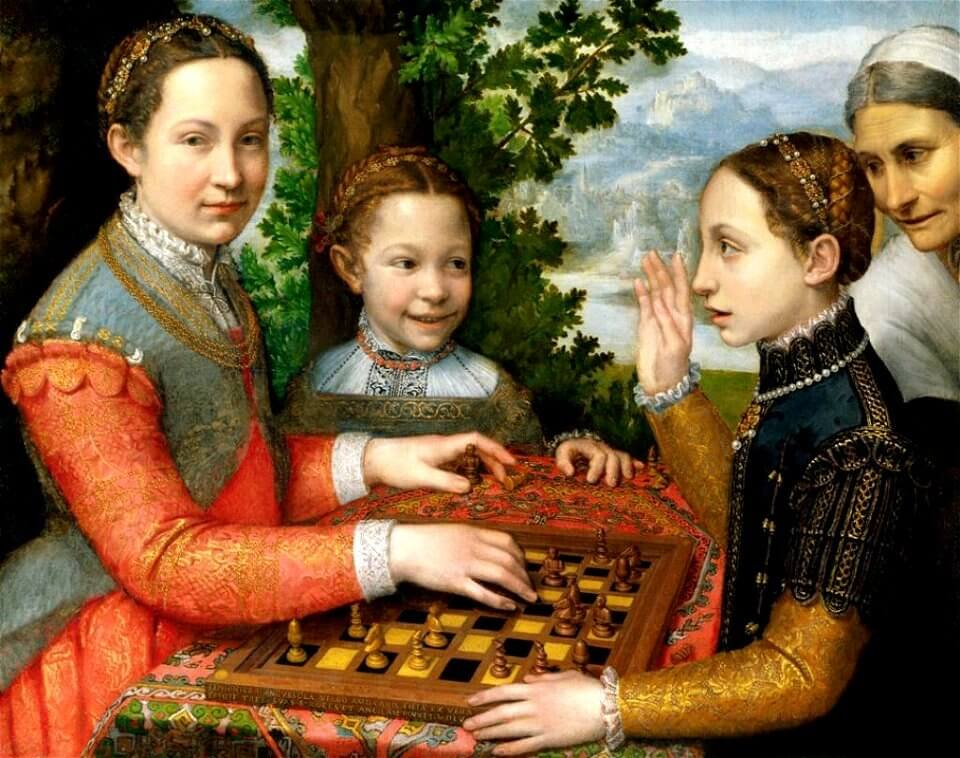

Learn With En Passant
Chess pieces

6 Chess Pieces in Standard Chess Sets A standard chess set has 32 pieces, 16 per side. These pieces are sometimes called chessmen, but most experienced players refer to their pieces as “material.” The rules of chess govern how each piece is placed, how each piece moves across what number of squares, and whether there are any special moves permitted. 1. The Pawn. The pawn is the lowest-value piece on the chessboard, and there are eight pawns per player. The way pawns are arranged on the board is called the “pawn structure.” On the first move, a pawn may move forward one or two spaces. On all subsequent turns, they may only move one space. Pawns can only capture pieces while moving forward and diagonally, either to the left or the right. (In certain cases, it may also be possible for a pawn to capture en passant.) If a pawn makes it all the way to the opposite side of the board, they may be promoted into any other piece (except the king). 2. The Knight. Along with bishops, knights make up the “minor pieces.” A knight is worth three points, or equal to the value of three pawns. The knight has unusual movement rules in a chess game. The knight’s ability to jump over other pieces makes it especially valuable, like in games where the center of the board is taken up with pawns that obstruct the movement of other pieces. The knight is the only piece that can skip over other pieces as part of its normal move. The knight must always move in an L shape: two spaces in one direction, and then one space perpendicular, or vice versa. 3. The Bishop. Like the knight, the bishop is considered a minor piece worth 3 pawns, or points. The bishop may move any number of spaces diagonally in any direction. That means that a player’s bishop will always remain on the same color on which it started. Patrolling the ranks and files of the board, the rook is one of the most powerful pieces in a chess player’s arsenal.
4. The Rook. The rook is considered a major piece valued at five pawns, two more than a bishop or knight and slightly less than two bishops or two knights. Two rooks are considered slightly stronger (by one pawn) than a single queen. A rook may move along either ranks or files (that is, horizontally or vertically) any number of occupied spaces per move. Like other non-knight pieces, the rook moves through unoccupied spaces and captures an opposing piece by occupying its space. 5. The Queen. The modern queen is the most valuable piece in the game of chess, and a key component in countless chess strategies. In material terms, the queen is valued at nine points—equivalent in value to three minor pieces, nearly as valuable as both rooks, and more valuable than every one of your pawns. The queen may move through an unlimited of unoccupied squares in any direction—horizontally, vertically, or diagonally. In other words, the queen’s moves combine the moves of the rook and bishop, making it an extremely strategically useful piece. 6. The King. The king is the most important piece in chess, and chess strategy often revolves around finding ways to protect your king while threatening your opponent’s. The king can move in any direction, albeit only one square at a time. This might seem to make the king a versatile piece, but there’s a major exception: The king can never move into a square that’s being attacked by an opponent’s piece (the king can never place itself in check). This also means that a king can never be adjacent to another king. While it’s important for each player to protect their king, during the endgame it may become a powerful attacking piece. Checkmate is the endstate of a chess game, which means the defending king has been placed in check with no way out. Technically, the king is the only piece that is never captured in a game of chess, as the game ends the moment checkmate is declared.
Greatest Matches in History
1: Kasparov vs. Topalov, Wijk aan Zee 1999 Despite losing a historic match to the computer engine Deep Blue two years earlier, Garry Kasparov was at the height of his powers in 1999, winning tournaments by big margins and recording the highest Elo rating ever at that time (2851). Kasparov has a long list of brilliancies to his credit, but this game is his virtually undisputed masterpiece. Kasparov vs. Topalov is everything a chess game should be, a ferocious fight with brilliance from both players, numerous tactical themes, and a king hunt that drives the king all the way from one side of the board to the other! It's difficult to imagine any other game atop this list, but we eagerly await new contenders in the coming years.
How It All Began
Chess wasn't an invention so much as it was an evolution. The earliest versions of chess originated more than 1,500 years ago in India, and as the game traveled to Persia, Asia, Europe and beyond, it took on new pieces, new rules and new dimensions of play. Even modern chess isn't a static game. New variations pop up every decade and spread like wildfire across the chess world.
Top 5 Chess Players of All times
Garry Kasparov Anatoly Karpov Magnus Carlsen Bobby Fischer Emanuel Lasker
Oldest Game in the World

Did you know that chess is the oldest game in the world and has been played in many countries around the globe? The oldest written record of chess is from 600 A.D., which was over 1,400 years ago! Some people believe the game is even older than that. One of the oldest chess sets that has ever been found is about 800 years old!